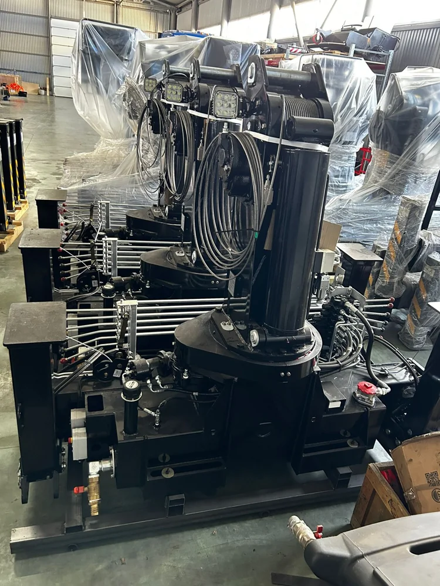

How to choose a loader crane for the load and reach you need
A crane can lift different weights beside the truck and at the far end of its reach. Three details narrow the choice: load weight, unloading radius and truck chassis.

Start at the delivery point
Suppose a pallet has to be placed behind a fence. Record its loaded weight and measure the horizontal distance from the crane’s slew axis to the landing point. Find that combination on the load chart for the model you are considering. The advertised maximum capacity usually applies close to the crane.

Match the boom to the job
A rope winch is useful when lowering a load into a trench. The hook can move vertically while the boom stays in position. An articulated boom gives the operator more ways to position the load alongside a building. If you need a grab or auger, ask which attachments the manufacturer approves for that particular crane.

Check what the truck can carry
On urban deliveries, overall dimensions and room to manoeuvre matter. On a construction site, consider the approach and the space available for the outriggers. Ask for the payload of the completed truck with the crane and body fitted. That figure tells you how much cargo can travel on the bed.